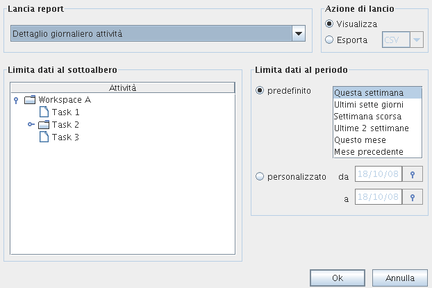

To generate a report open the reports panel from menu |File|Reporting|. From the reports panel you can :
Then press the confirm button to view the report preview.

Illustration
1:the report launch panel
From the preview window you can navigate through the report contents, print, or save the report in the following formats PDF, RTF, HTML , XLS, CSV or XML.
You can choose from two reports:
the daily task detail: shows a list of actions grouped by day and task, and sorted by day, task name and start time. You can use it to check your daily work.
the daily actions list: shows a list of actions groups bu day and sorted by day and start time. It is useful to check if you have missed to record some actions.
To limit report data to a certain task and its subtree, select that task in the reports panel task tree.
You can choose a preset or manually set a start and/or finish date to limit report data to a certain temporal interval.